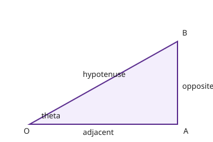

<script>if(location.hostname.endsWith('onrender.com'))location.replace('https://math-sandbox.pages.dev'+location.pathname+location.search+location.hash)</script>
<section class="theory" data-section="P23-3.1">
<h2>3.1 The cosecant, secant and cotangent ratios</h2>
<p class="src">Based on Cambridge International AS &amp; A Level Mathematics: Pure Mathematics 2 &amp; 3 Coursebook, Chapter 3, printed pp.53–57 (the cosecant, secant and cotangent ratios, and the identities \(1+\tan^2\theta\equiv\sec^2\theta\) and \(\cot^2\theta+1\equiv\operatorname{cosec}^2\theta\)). Printed pages were read from P23.pdf (printed 53–57 = PDF 65–69). Own wording and new numbers. Teaching stops before 3.2 Compound angle formulae on printed p.58.</p>
<p class="key-words"><strong>Key words:</strong> <em>cosecant</em>, <em>secant</em>, <em>cotangent</em></p>
<p>The <strong>cosecant</strong>, <strong>secant</strong> and <strong>cotangent</strong> ratios are the reciprocals of sine, cosine and tangent: \(\operatorname{cosec}\theta=\dfrac{1}{\sin\theta}\), \(\sec\theta=\dfrac{1}{\cos\theta}\) and \(\cot\theta=\dfrac{1}{\tan\theta}=\dfrac{\cos\theta}{\sin\theta}\).</p>
<figure>

<figcaption>In a right-angled triangle, \(\operatorname{cosec}\theta=\dfrac{\text{hypotenuse}}{\text{opposite}}\), \(\sec\theta=\dfrac{\text{hypotenuse}}{\text{adjacent}}\) and \(\cot\theta=\dfrac{\text{adjacent}}{\text{opposite}}\).</figcaption>
</figure>
<p>The identities \(1+\tan^2\theta\equiv\sec^2\theta\) and \(\cot^2\theta+1\equiv\operatorname{cosec}^2\theta\) are used to solve equations. Exact special-angle values include \(\operatorname{cosec}30^\circ=2\), \(\sec 60^\circ=2\) and \(\cot 45^\circ=1\).</p>
<div class="worked-example"><h4>Worked example 1</h4>
<p class="src">Book: Key point 3.1, exact special angles, printed pp.53–57. New wording of standard values.</p>
<p>Write down the value of \(\operatorname{cosec}30^\circ\).</p>
<ol class="steps">
<li>\(\sin 30^\circ=\dfrac{1}{2}\), so \(\operatorname{cosec}30^\circ=2\). <span class="mark">A1</span></li>
</ol></div>
<div class="worked-example"><h4>Worked example 2</h4>
<p class="src">Book: the identity \(\cot^2	heta+1=\operatorname{cosec}^2	heta\). New numbers at 45 degrees.</p>
<p>Given that \(\cot 45^\circ=1\), find \(\operatorname{cosec}^2 45^\circ\).</p>
<ol class="steps">
<li>\(\operatorname{cosec}^2 45^\circ=\cot^2 45^\circ+1=1+1=2\). <span class="mark">A1</span></li>
</ol></div>
<h3>Common mistakes</h3><ul>
<li>Confusing \(\sec\theta\) with \(\operatorname{cosec}\theta\), or writing \(\sec\theta=\dfrac{1}{\sin\theta}\).</li>
<li>Using the identity \(1+\tan^2\theta=\sec^2\theta\) with the wrong function on the right-hand side.</li>
</ul>
<div class="quick-check" data-q="QC1">
<h4>Quick check 1</h4>
<p>Write down the value of \(\operatorname{cosec}30^\circ\).</p>
<details>
<summary>Show answer</summary>
<ol class="steps">
<li>\(\operatorname{cosec}30^\circ=2\). <span class="mark">A1</span></li>
</ol>
<p class="final">\(2\)</p>
</details>
</div>
<div class="quick-check" data-q="QC2">
<h4>Quick check 2</h4>
<p>Write down the value of \(\sec 60^\circ\).</p>
<details>
<summary>Show answer</summary>
<ol class="steps">
<li>\(\sec 60^\circ=2\). <span class="mark">A1</span></li>
</ol>
<p class="final">\(2\)</p>
</details>
</div>
<div class="quick-check" data-q="QC3">
<h4>Quick check 3</h4>
<p>Given that \(\cot 45^\circ=1\), find \(\operatorname{cosec}^2 45^\circ\).</p>
<details>
<summary>Show answer</summary>
<ol class="steps">
<li>\(\operatorname{cosec}^2 45^\circ=1+1=2\). <span class="mark">A1</span></li>
</ol>
<p class="final">\(2\)</p>
</details>
</div>
<h3>Past paper</h3>
<p class="src">9709/21/O/N/10 Question 5, 6 marks. Official QP and MS. Questions 2 and 7 of this paper were already used in earlier packages.</p>
<p>Solve the equation \(8+\cot\theta=2\operatorname{cosec}^2\theta\), giving all solutions in the interval \(0^\circ\leqslant\theta\leqslant 360^\circ\). [6]</p>
<details><summary>Show official scheme</summary>
<ol class="steps">
<li>Use a correct trig identity to obtain a quadratic in \(\cot\theta\) or \(\tan\theta\). Official MS: M1. <span class="mark">M1</span></li>
<li>Solve the quadratic correctly. Official MS: A1. <span class="mark">A1</span></li>
<li>Obtain \(\tan\theta=\dfrac{1}{2}\) or \(-\dfrac{2}{3}\). Official MS: A1 follow through. <span class="mark">A1</span></li>
<li>Obtain 26.6° or 146.3°. Official MS: A1. <span class="mark">A1</span></li>
<li>Carry out a correct method for a second answer from either root. Official MS: M1. <span class="mark">M1</span></li>
<li>Obtain the remaining three of 26.6°, 146.3°, 206.6°, 326.3° and no others in the range. Official MS: A1. <span class="mark">A1</span></li>
</ol></details>
</section>
